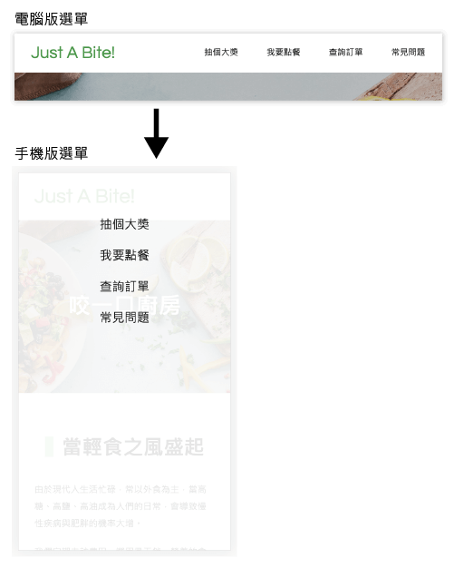

以下為我自己學習 HTML & CSS 時，實作漢堡選單的過程。
製作漢堡選單圖標
首先需刻出選單樣式，先將按鈕拆解成三條橫線。
1
2
3
| <div class="mobile-menu">
<span class="mobile-menu__line"></span>
</div>
|
1
2
3
4
5
6
7
8
9
10
11
12
13
14
15
16
17
18
19
20
21
22
23
24
25
26
27
28
29
30
31
32
33
| .mobile-menu {
position: relative;
width: 35px;
height: 25px;
cursor: pointer;
z-index: 1;
}
.mobile-menu__line,
.mobile-menu::before,
.mobile-menu::after {
position: absolute;
width: 100%;
height: 4px;
background-color: #010101;
}
.mobile-menu__line {
top: 50%;
transform: translateY(-50%);
}
.mobile-menu::before {
content: '';
top: 0;
}
.mobile-menu::after {
content: '';
bottom: 0;
}
|
調整手機版選單介面
接著要將電腦版的導覽列轉成手機版。

手機版畫面自由調整成需要的畫面即可，我這邊使用 position 來讓畫面滿版呈現。
1
2
3
4
5
6
7
8
9
10
11
12
13
14
15
16
17
18
19
20
21
22
| @media (max-width: 768px) {
header {
position: relative;
}
.navbar {
position: absolute;
top: 0;
left: 0;
flex-direction: column;
width: 100%;
height: 0;
overflow: hidden;
background-color: #fff;
text-align: center;
z-index: 1;
}
.open.navbar {
height: 100vh;
}
|
加入 JacaScript。
1
2
3
4
5
| const mobileMenu = document.querySelector('.mobile-menu')
const navbar = document.querySelector('.navbar')
mobileMenu.addEventListener('click', function (){
navbar.classList.toggle('open')
})
|
這樣即可完成基本的漢堡選單！
增加按鈕變化
雖然剛剛已經完成最基本的漢堡選單，但我們可以再繼續優化，加入一些小動畫能更符合使用者體驗。
效果：

1
2
3
4
5
6
7
8
9
10
11
12
13
14
15
16
17
18
19
| .open .mobile-menu__line {
display: none;
}
.open.mobile-menu::before,
.open.mobile-menu::after {
top: 50%;
transform: translateY(-50%);
}
.open.mobile-menu::before {
transform: rotate(45deg);
}
.open.mobile-menu::after {
transform: rotate(-45deg);
}
|
記得最後在適當的位置設定 transition，就大功告成囉！